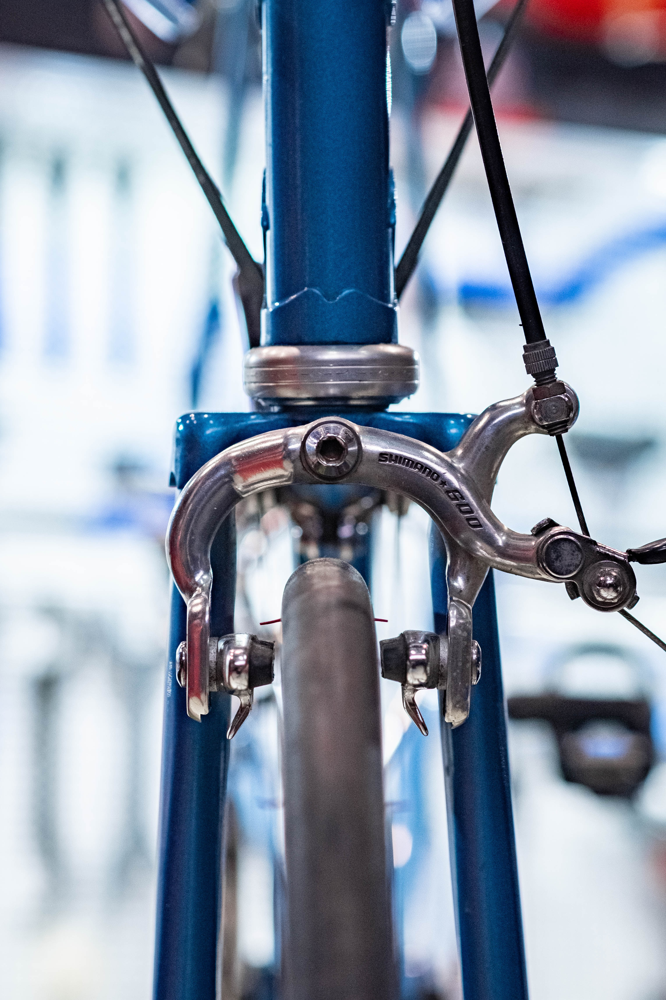
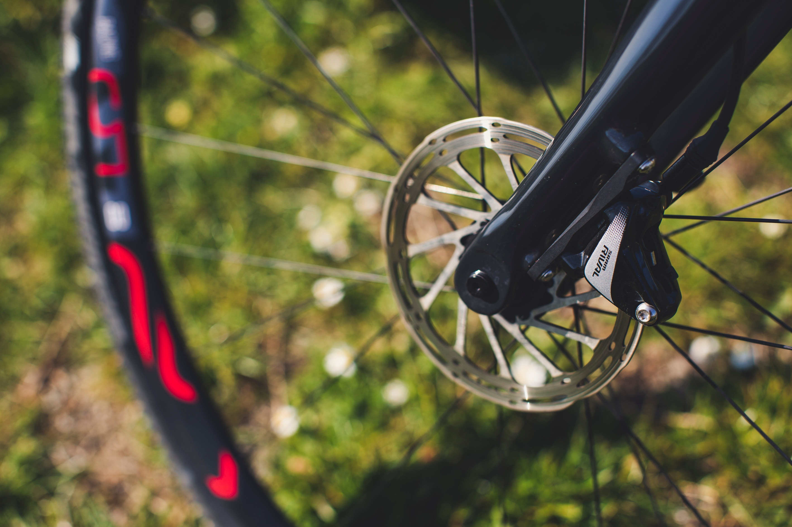
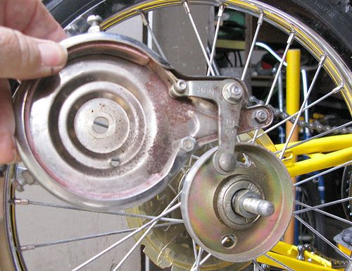

Ok lets brake things down.. breaks..sorry brakes are the unsung heroes of the biking world. They're the caped crusaders that save you from bumping into road passengers, into other vehicles or balooning off a cliff.
It goes without saying that brakes are essential gadgets on your bicycle
Now let's dive into the three types of brakes, which are the rim, drum, and disc brakes
RIM BRAKES: WHERE IT ALL BEGAN
Rim brakes are the OGs of bike stopping mechanisms. Picture this: brake pads gently squeezing the wheel rim like a firm handshake, coaxing your bike to slow down. They're like the subtle jazz musicians of the braking world – smooth, efficient, and reliable.
Pros of Rim Brakes
LightWeight
Rim brakes have very simple parts and therefore do not have too much weight. This is why they are mostly favoured in professional cycling where a saving of as little as 1kg in weight can translate to coming 1st or 5th in a race. Therefore, if you are looking to save weight, go for rim brakes.
Won't Break The Bank
Kanayo O Kanayo fans, this one is not for you... As already mentioned, rim brakes are very simple in design and use relatively inexpensive parts, making them very pocket-friendly.
Low-Maintenance Champs
The simple design of rim brakes make them to be very easy to fix and maintain. You can easily buy the rim brake parts and with some tinkering, fix them. If you aren't very savvy with tools, rim brakes should prove even simple enough for you. Even when you cannot fix them yourself they are easily fixable by a cycling buddy or the average mechanic should fix it in minutes.
Hold your horses brakes...As seemingly perfect as rim brakes are, they're not flawless:
Cons of Rim Brakes
Rim Brakes perform poorly in wet conditions. If you ride frequently in rainy areas, or areas with a lot of muddy pools, you might want to pass on buying a bike with rim brakes. If you already have one, do not worry, with a little bit of sacrifice..(bombastic side eye KOK fans).. you can still manage rim brakes.
Instead of riding over mud pools that will cover your rims and make braking difficult, consider coming down from your bike and walking it past the muddy area. If you are in the rain or you get into a muddy pool or wet porthole, When you need to stop, don't grab the brake outrightly, feather it a little to rub off the wet parts then re-apply the brake. Over-time, you will master this technique and you should find it easier to use rim brakes in wet conditions.
Rim brakes are like the sprinters of the biking world – perfect for road races and weight-conscious riders.
DISC BRAKES - THE SUPERHEROES OF STOPPING
Now, meet the action heroes – the disc brakes! You'll spot them on MTBs and hybrids, tackling trails and conquering roads with unmatched prowess. These bad boys come with a metal disc, acting like a secret weapon against speed.
Pros
Unbeatable Performance
While rimmies are the OGs of braking in cycling, Disc brakes are the "Agba-brakers." If you are a sprinter and you need to stop in seconds like a motorcycle. Disc brakes are your plug.
Mud, Rain, Shine, THEY DELIVER
While rimmies have to look out of their window to assess the weather before they venture out on their rides, disc brakes are weather resistant. Oya oya you don catch us - that was an exaggeration. Seriously though, disc brakes have no regard for the weather. Wet, Dry or Snowy. They continue to exhibit their unmatched stopping abilities. If reliability is a priority, get your discs so you can keep rolling while your rimmie friends are still adjusting their rim-brake shoes.
As mighty as disc brakes are, they are not without their own downsides
A Bit On The Heavy Side
That marvelous stopping power of a disc brake comes at a cost, some costs actually. First is the weight. Disc brakes require a special apparatus close to your wheelhub (instead of the rims for rim brakes) where they operate. This means one thing: more weight for your bike. Bad news for road bikes that want to be as light as possible for speed. This is why you are more likely to find disc brakes on mountain or gravel bikes. The weight is not an issue. And that extra stopping power and durability in diverse environments is desired.
Pricey
Compared to our Sapa-friendly rim brakes, disc brakes are more expensive. You are also more likely to find disc brakes on newer bikes, which increase their price tag.
And there you have it! Disc brakes are like the Iron Man suits of the biking universe – strong and formidable, and always up for a challenge.
Drum Brakes: The Reliable Sidekick
Say hello to the drum brake, the steadfast companion of utility bikes. Imagine the solid thud of a car brake – that's the drum brake. It's not flashy, but it gets the job done without much fuss.
Pros of Drum Brakes
Low-Maintenance Warriors
Drum brakes require minimal maintenance and debris like dirt, sand and stones are less likely to get inside them, making drum brakes suitable for touring or commuting bikes.
Weather Resistant
Drum brakes protection from the elements also mean that they are less affected by wet or muddy conditions compared to rim brakes, which can lose effectiveness when wet.
But, like a loyal sidekick, drum brakes also have their limitations
Cons of Drum Brakes
Weight
Drum brakes can be heavier than other braking systems, which can be a concern for cyclists looking to reduce the weight of their bikes.
Heat Dissipation
The protection of drum brakes from the elements such as air or water makes them vulnerable to heat issues. For example, during prolonged or steep descents, drum brakes can heat up, potentially leading to reduced braking performance.
Less Common
Drum brakes are less common in the cycling industry, making it more challenging to find replacement parts or knowledgeable service technicians.
Drum brakes are like the trusty sidekicks in a biking adventure – dependable, easygoing, and there when you need them. So there you have it – the brake trinity! Rim brakes for the classics, disc brakes for the action-packed thrill-seekers, and drum brakes for the laid-back cruisers. Each has its charm, each has its quirks. Which one suits your biking saga?"